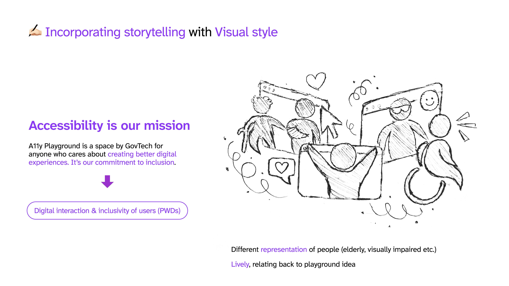
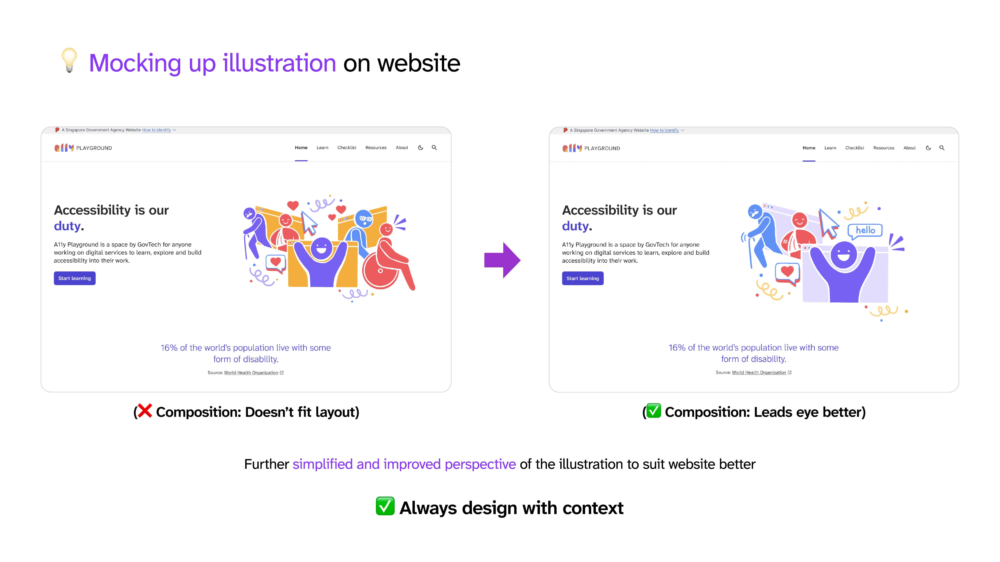
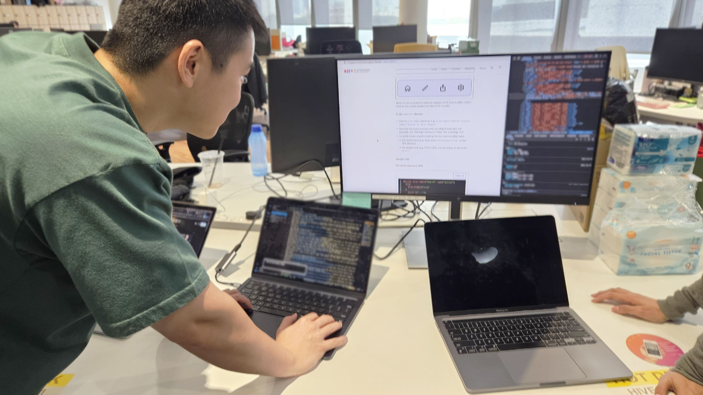

GovTech Singapore
UI/UX, Art Direction, Motion Graphics
UI/UX Internship
Project Brief
This summer, I joined GovTech Singapore as a UX/UI Designer intern. Below are some contributions I made to the A11y Playground team, which I joined halfway through their design process. My role primarily involved setting the site's art direction with illustrations, as well as participating in user interviews and synthesising data for site refinement.
As a government agency, Govtech has an even greater responsibility
to ensure that government digital services meet the needs of users
that are People with Disabilities (PWDs). During Inclusive Design
Week (IDW) 2025, GovTech unveiled A11y Playground, an interactive
website designed to empower developers in creating more accessible
and inclusive digital services. It offers a practitioner checklist
and real-world examples to guide them in identifying usability gaps
and validating their solutions.
üëâ View site here:
https://a11y.tech.gov.sg/
üì∞ News Coverage:
Straits Times,
Lian He Zao Bao
Setting the Art direction for A11y Playground
(Providing 10+ animated illustrations from scratch)
Initially, I brainstormed by finding different styles, including line art, vector shapes, and various other creative treatments. Three styles were then shortlisted for the team's feedback. The vector style was chosen for its stronger consistency with the A11y logo and striking appearance.
Abstract human figures: Accessibility icons
I opted for Abstract human figures when defining the visual style, as my primary goal was to convey a sense of inclusivity, ensuring the visuals resonated with everyone, regardless of disability. This resonates with the familiar and universally understood accessibility signs commonly encountered in public, with their simplified forms effectively communicating accessibility for all.
Adding storytelling through visuals
Visuals add a deeper layer of storytelling by providing context to the copy. For instance, in the hero segment, web tabs and a cursor are used to subtly hint at A11y’s purpose in digital services. Different ideas were hand-sketched to explore this.
Each visual has a message to convey, such as representation and inclusivity, as well as pain points of the users when frustrated with digital services that are not accessible.

Converting sketches to High-Fidelity
After many iterations, I created high-fidelity designs in Procreate using A11y logo colours and ensured they fit the layout of the website. These were converted to vector SVGs in Adobe Illustrator for efficient web loading and easy customisation (e.g. changing colour) by colleagues in Figma.

Adding animation & exporting as Lottie JSON
Animations were added in Adobe After Effects and exported as Lottie JSON files for the Software Engineer to use. This keeps the file size small while maintaining quality when upscaling.
Ensuring it's accessible for all users
The final iteration was optimised for light and dark modes, and a colourblind simulator was used to ensure it works for our colourblind users. Alt text was added for screen readers, enabling people with visual impairments to easily access the content.
Sharing my process during Design Studio
Finally, I was also given the chance to present my illustration process to over 30 UX designers during our monthly design studio. It felt meaningful to be sharing my process with everyone else, as some told me they had learned a thing or two from it. Most importantly, I also got to hone my presentation skills and learned how to integrate accessibility with my drawings.
Doing up digital screens
I also assisted with other tasks, such as creating Figma frames for the "Principle of Accessibility: Top 10 Issues" pages. I designed these with a "large screen" first, given that the website is primarily viewed on laptops.
(Had more experience doing up Figma screen flows in another project, but it's confidential)
Discovering Insights through participating in user interviews and synthesising findings
I collaborated with another UX designer on a user testing initiative to discover insights that could help improve our website's experience for people working in government. I helped scribe the interviews (6 of them), meticulously documenting observed behaviours and identified pain points. Additionally, I took on the responsibility of conducting one of the user tests myself. This allowed me to directly observe and understand the user's journey firsthand, gaining insights into their perception of our content's clarity and the website's overall ease of interaction.
Afterwards, I transcribed the interviews using Dovetail and synthesised key findings and insights, clustering them into different categories based on “content”, “features”, “positive feedback”, and “areas of confusion”, specifically for the checklist and resources sections. These findings were then entered into Google Sheets, with interview timestamps for a consolidated and clearer viewing. Each insight was also labelled with its severity issue and further labelled with the type of action needed to address it.
Our findings and recommendations were then presented to the rest of the team in a refined slide deck, which included specifications such as the number of participants who experienced confusion. From this, I also learned the importance of elaborating on the nature and context of their confusion, providing more detailed scenarios to the team for better understanding.
I also participated in desk checks with the Software Engineers to ensure the UI aligned with our Figma prototype. During these checks, I noted some concerns, such as the lack of contrast and similarity in the checklist labels' colors, sizing of the illustrations, and inconsistencies in the breadcrumbs. Fortunately, all these issues were rectified afterwards.
